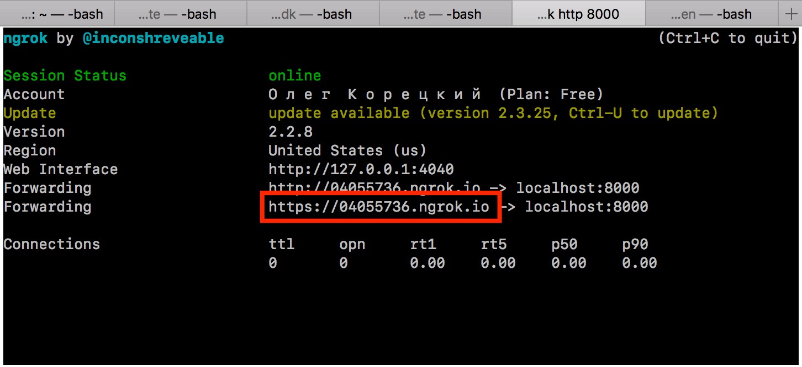

ngrok allows you to get a public domain for the server running on localhost
without the need of real IP and port forwardings.
However, if you have a real IP with open 8000 port you can
reconfigure your environment
or just input http://YOUR_IP:8000 on the 4th step.
In the terminal run ngrok http 8000 command
Copy last «Forwarding» URL from the appeared window

Paste an URL in the field below and click «Get QR code»
Scan generated QR code with the mobile TokenD Wallet